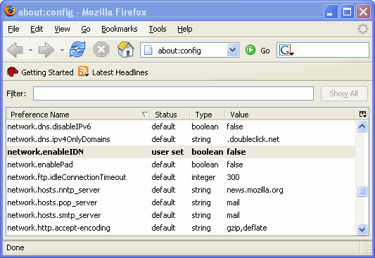

Historically an Internet domain names contain ASCII symbols only. But lately the number of those users who want to use Unicode characters when registering their domain names increased steeply. But domain name resolving system does not allow to apply Unicode characters.
Internationalizing Domain Names in Applications (IDNA) was adopted as the chosen standard and has a purpose to convert Unicode characters into standard ASCII domain names and thus preserve the stability of the domain name system.
Examples of the internationalized domain names:
As you follow one of these links you may notice that a Unicode domain name represented in the address bar will be sustituted by the ASCII string.
You may get interested about how to perform such conversion in your application.
According to RFC 3490, IDNA does not extend the service offered by DNS to the applications. Instead, the applications (and, by implication, the users) continue to see an exact-match lookup service.There are two main operations to accomplish the conversion between ASCII and non ASCII formats:
- In Java™SE the ToASCII operation is used before sending an IDN to domain name resolving system or writing an IDN into a file where ASCII characters are expected (such as a DNS master file).
- The ToUnicode operation is used when displaying names to users, for example names obtained from a DNS zone.
A special class
java.net.IDNin Java™ SE allows to perform these operations. This class has two methods per each operations. ThetoASCII(String input, int flag)method allows to convert Unicode characters to ASCII.
flagparameter defines the behavior of the conversion process. The ALLOW_UNASSIGNED flag indicates the using of code points that are unassigned in Unicode 3.2 and the USE_STD3_ASCII_RULES flag enables the check against STD-3 ASCII rules. You can use these flags separately or logically OR'ed together. If the flag equals zero, you can specify its value in the two-argument method or just invoke a counterpart method:toASCII(input);If the an input argiment doesn't conform to RFC 3490, this method will throw
IllegalArgumentException.
String ace_name = IDN.toASCII("http://清华大学.cn/");The
toUnicodemethod Translates a string from ASCII Compatible Encoding (ACE) to Unicode code points. This method never fails, in case of any error the input string remains the same and will be returned unmodified.Security concern
A potential security risk appeared because IDN allows websites to use Unicode names. It can make easier to create a web site that can has a domain name, security certificates or even an outward appearance exactly like your own site. But in fact, it can be used for phishing purpose in order to collect private information about your site visitors. These sites are called a spoofed web sites.
For example, somebody can register a site with identical domain name as you have, by substituting a small Latin "a" or "o" with a resembling Cyrillic "a" or "o". In this case, new domain points users to another site and potentially opens users up to homograph attacks.
This is a well-known issue from the very beginning of introducing of the IDN conception. You can avoid it by turning off the IDN support entirely. You should type
"about:config"into the address bar of the browser, find the"network.enableIDN"setting, and change its value to "false". Also, both Mozilla and Opera have now announced the using of per-domain whitelists for selectively switching on IDN for those domains which are taking appropriate anti-spoofing precautions.
You can try to adjust the"network.IDN.whitelist.<lang>"settings to enable/disable a whitelist for a partucular language.